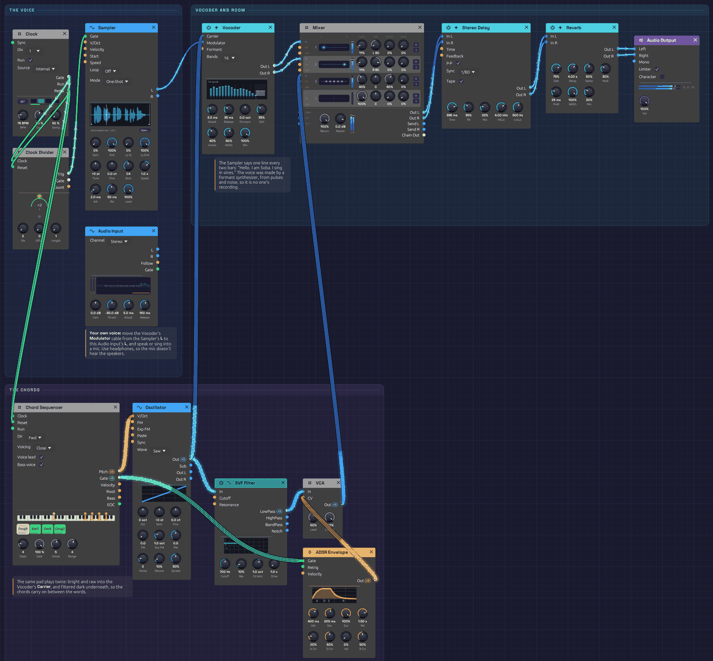

Soba Speaks
A patch that talks. Every two bars a voice says "Hello. I am Soba. I sing in sines." You don't hear the voice itself. You hear a chord of saws wearing its vowels and consonants, through a Vocoder. The chords fall a step a bar, Fmaj9, Em7, Dm9, Cmaj7, and a soft pad of the same chords carries on between the words. Move one cable and it speaks with your voice instead.
*Or play it here: press **▶ Play** in the corner. The full app is a click away under **Open in Soba**.*Load it: choose 📚 Examples → Soba Speaks in the toolbar and press ▶ Play. It needs no keyboard. The patch file is
patches/soba-speaks.json, and its voice ispatches/samples/soba-speaks.wav.

The voice is on the left, the vocoder and its room run along the top, and the chords run along the bottom. One oscillator feeds both the vocoder's Carrier and the dark pad.What it teaches
- Carrier and modulator. A vocoder has two inputs, and they do different jobs. The Modulator says what is said: the voice's changing spectrum. The Carrier says what it's said with: its pitch, its chord, its tone.
- A sample that plays itself. A Sampler in One-Shot mode, fired by a Clock Divider every two bars, makes a recorded line part of the song.
- A whole chord on one cable. The Chord Sequencer sends five voices down one polyphonic cable. The Vocoder sums them into one carrier, so the voice speaks in harmony.
- One oscillator, two jobs. The same saw chord goes raw into the vocoder, which needs its highs, and filtered dark into a pad underneath.
- Stereo bands. The Vocoder's odd bands lean left and its even bands lean right. Two Mixer strips, panned apart, keep the spread.
Modules
| Module | Settings |
|---|---|
| Clock | BPM 76, Div 1 (a pulse every bar) |
| Clock Divider | Div 2 (every other bar) |
| Sampler | samples/soba-speaks.wav, Mode One-Shot, Atk 2 ms, Rel 50 ms, Level 100% |
| Audio Input | Defaults, unpatched: for your own voice |
| Chord Sequencer | Steps 4, Gate 100%, Voices 5, Range 4, Voicing Close, Voice lead on, Bass voice on. Chords Fmaj9 (F3), Em7 (E3), Dm9 (D3), Cmaj7 (C3) |
| Oscillator | Wave Saw, Voices 2, Detune 10%, Spread 50% |
| SVF Filter | Cutoff 700 Hz, Res 10% |
| VCA | Level 50% |
| ADSR Envelope | Atk 400 ms, Dec 200 ms, Sus 100%, Rel 1.5 s, Vel 0% |
| Vocoder | Bands 16, Attack 3 ms, Release 35 ms, Formant 0, Sibil 35%, Unvoic 40%, Width 60%, Mix 100% |
| Mixer | Level 1 and Level 2 11%, Pan 1 L 80, Pan 2 R 80. Level 3 40%, Width 3 60% |
| Stereo Delay | Sync 1/8D, FB 35%, Mix 22%, HiCut 4 kHz, LoCut 300 Hz, P-P on, Tape on |
| Reverb | Size 75%, Decay 4 s, PreD 25 ms, Mix 30%, Mod 30% |
| Audio Output | Vol 100%, Limiter on |
How it's built
The voice
[Clock Gate] ──> [Clock Divider Clock]
[Clock Divider Trig] ──> [Sampler Gate]
[Sampler L] ──> [Vocoder Modulator]
The Clock pulses once a bar. The Clock Divider passes every second pulse to the Sampler, which plays its recording from the start in One-Shot mode, to the end whatever the gate does. The line lasts just under four seconds, a bar and a quarter at 76 BPM. Its last word, sines, lands on the change to the second chord.
The voice isn't anyone's recording. It was made for this example by a small formant synthesizer, tools/voice/speak.py. A pulse train at a speaking pitch, shaped like the airflow through the vocal folds, runs through a chain of resonators. The lowest three glide from sound to sound: they're the formants that make an "ah" an "ah". The "s" sounds are filtered noise. To a vocoder, that's all a voice is: formants that move, and hiss.
The chords
[Clock Gate] ──> [Chord Sequencer Clock]
[Chord Sequencer Pitch] ──> [Oscillator V/Oct]
[Oscillator Out] ──> [Vocoder Carrier]
──> [SVF Filter In]
[SVF Filter LowPass] ──> [VCA In]
[Chord Sequencer Gate] ──> [ADSR Gate]
[ADSR Out] ──> [VCA CV]
The Chord Sequencer steps once a bar through four chords that fall by step: Fmaj9, Em7, Dm9, Cmaj7. With Voice lead on, each chord moves to the nearest notes of the next, so the harmony glides down instead of jumping. Five voices of two detuned saws each give the vocoder a carrier rich in highs, all the way up through its top bands.
The same chord goes through the SVF Filter at 700 Hz into a VCA that swells with each chord. That's the pad underneath: dark enough not to compete with the words, and still there when the voice is silent.
The vocoder and the room
[Vocoder Out L] ──> [Mixer Ch 1] (panned L 80)
[Vocoder Out R] ──> [Mixer Ch 2] (panned R 80)
[VCA Out] ──> [Mixer Ch 3]
[Mixer Out L/R] ──> [Stereo Delay] ──> [Reverb] ──> [Audio Output]
The Vocoder splits the voice into 16 bands, from 100 Hz to 6.4 kHz. Each band's level opens the matching band of the chord. Attack 3 ms and Release 35 ms are fast enough for speech, so each syllable starts and stops cleanly. Sibilance lets the voice's own "s" sounds through on top, and Unvoiced puts noise in the carrier's place while the voice hisses, so the consonants stay readable.
A five-note chord is loud, so the vocoder's strips sit at 11%. The ping-pong echo answers each phrase from the other side, and the reverb puts the voice and the pad in one room.
Try this
- Speak into it. Move the Vocoder's Modulator cable from the Sampler's L to the Audio Input's L, pick your microphone under Input in the toolbar, and talk or sing. Wear headphones, or the mic hears the speakers. Sustained vowels make the chords bloom. A whisper comes through as hiss.
- Robot. Set Bands to 8 and Release to 20 ms.
- Choir. Set Bands to 24 and Release to 600 ms. The words smear into a choir that holds each vowel.
- Change the throat. Turn Formant up to +0.5 oct for a small, bright voice, or down to −0.5 oct for a giant. The pitch stays the chord's. Patch a slow LFO into the Formant input and the voice keeps changing size.
- A whisper. Patch Noise (white) into Carrier in place of the oscillator. The voice comes back with no pitch at all.
- Hear what the vocoder hears. Bypass the Vocoder (Ctrl+B) and you hear the raw saw chord it's been shaping all along.